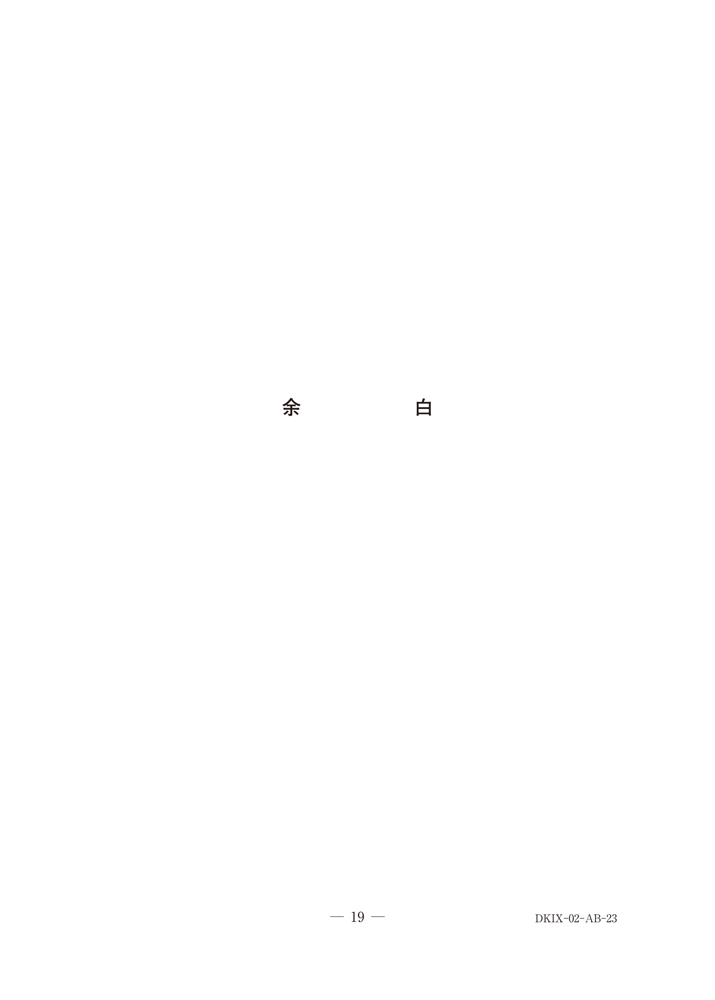

院内感染対策
院内感染とは
院内感染とは、病院・診療所などの医療施設内で患者や医療従事者が感染することをいう。対象は患者だけでなく病院スタッフも含まれる。
- 医療法で院内感染対策委員会の開催を規定
- 医療安全確保の指針策定が義務
- 従業者への研修実施が必要
感染予防の三原則
| 対策 | 対象 | 予防法 |
|---|---|---|
| 感染源対策 | 細菌・ウイルスを持つ人や物 | 滅菌、消毒、隔離、発症者の入院加療 |
| 感染経路対策 | 接触・飛沫・空気感染など | 手洗い、マスク、消毒 |
| 感受性対策 | 抵抗力の弱い人 | 予防接種、健康増進 |
標準予防策（Standard Precautions）
すべての患者に対して適用する基本的な感染対策。感染症の有無に関わらず、血液・体液・分泌物・排泄物・傷のある皮膚・粘膜を感染性があるものとして扱う。
標準予防策の内容
- 手指衛生：患者接触前後、清潔操作前、体液曝露後
- 個人防護具（PPE）：手袋、マスク、ゴーグル、ガウン
- 咳エチケット
- 患者配置（隔離）
- 器材の適切な処理
※汗は標準予防策の対象外（感染リスクが低いため）
Spaulding分類
医療器具の感染リスクに基づき、必要な消毒・滅菌レベルを分類したもの。
3つのカテゴリー
| 分類 | 接触部位 | 処理 | 歯科器具の例 |
|---|---|---|---|
| クリティカル | 無菌組織・血管内 | 滅菌 | 抜歯鉗子、リーマー、スケーラー、注射針 |
| セミクリティカル | 粘膜・損傷皮膚 | 高水準消毒 （できれば滅菌） |
印象用トレー、ミラー |
| ノンクリティカル | 正常皮膚のみ | 低〜中水準消毒 | 歯科用チェア、無影灯 |
※ハンドピースはセミクリティカルだが、サックバック現象のため患者ごとに滅菌が推奨
滅菌と消毒
滅菌法
| 方法 | 条件 | 対象 |
|---|---|---|
| 高圧蒸気滅菌 （オートクレーブ） | 121℃ 2気圧 15〜20分 | 耐熱性の器具（第一選択） |
| 乾熱滅菌 | 160〜170℃ 2〜4時間 | ガラス、金属 |
| ガンマ線滅菌 | 放射線 | プラスチック製品 |
| EOG滅菌 | エチレンオキサイドガス | 非耐熱性器具 |
| 低温プラズマ滅菌 | 過酸化水素ガス | 非耐熱性器具 |
※プリオンは通常のオートクレーブで失活しない→低温プラズマ滅菌が有効
消毒薬の水準
| 水準 | 消毒薬 | 芽胞 | 用途 |
|---|---|---|---|
| 高水準 | グルタラール、過酢酸、フタラール | ○ | セミクリティカル器具 |
| 中水準 | 次亜塩素酸Na、ポビドンヨード、エタノール | × | 環境表面、皮膚 |
| 低水準 | ベンザルコニウム、クロルヘキシジン | × | 手指、環境 |
歯科におけるエアロゾル対策
歯科治療ではエアロゾル（飛沫核）が発生しやすく、口腔外バキュームの併用が推奨される。
エアロゾル発生機器
- エアタービン
- 超音波スケーラー
- スリーウェイシリンジ
※光照射器、マイクロスコープはエアロゾルを発生しない
過去問で確認
病院における院内感染対策のための委員会の開催を規定しているのはどれか。1つ選べ。
b 健康増進法
c 廃棄物の処理及び清掃に関する法律
d 感染症の予防及び感染症の患者に対する医療に関する法律
e 医薬品、医療機器等の品質、有効性及び安全性の確保等に関する法律
【解説】院内感染対策委員会の開催は医療法で規定されている。感染症法（d）は感染症の類型や届出を規定するもので、院内感染対策委員会とは関係がない。
標準予防策〈standard precautions〉に基づく、接触による院内感染の予防で適切なのはどれか。1つ選べ。
b N95マスクの着用
c 抗菌薬の予防投与
d 個室での入院治療
e 汗が付着した機器の清拭
【解説】標準予防策における接触感染予防の基本は手洗い（手指衛生）である。N95マスク（b）は空気感染対策、個室隔離（d）は感染経路別予防策。汗は標準予防策の対象外なので（e）は不適切。
院内感染リスクのSpaulding分類でセミクリテイカルに該当するのはどれか。1つ選べ。
b リーマー
c スケーラー
d 印象用トレー
e 歯科用チェア
【解説】印象用トレーは粘膜に接触するがセミクリティカル。抜歯鉗子（a）、リーマー（b）、スケーラー（c）は血液・無菌組織に接触するためクリティカル。歯科用チェア（e）は正常皮膚のみなのでノンクリティカル。
ある機器の写真（別冊No.23A）とその機器を使用している写真（別冊No.23B）を別に示す。 院内感染予防対策でこの機器を併用する必要があるのはどれか。3つ選べ。


b エアタービン
c 超音波スケーラー
d マイクロスコープ
e スリーウェイシリンジ
【解説】写真は口腔外バキューム。エアロゾルを発生させるエアタービン、超音波スケーラー、スリーウェイシリンジの使用時に併用が必要。光照射器やマイクロスコープはエアロゾルを発生しない。
院内感染対策で正しいのはどれか。1つ選べ。
b 病院スタッフは対象外である。
c 消毒・滅菌は対策の一つである。
d 抗菌薬の使用方法とは無関係である。
e 一般社会環境と同様の対策をとることが望ましい。
【解説】院内感染対策には消毒・滅菌が含まれる（c）。外因感染も内因感染も対象（a×）、病院スタッフも対象（b×）、抗菌薬の適正使用も重要（d×）、病院は一般環境より厳格な対策が必要（e×）。
医療事故防止対策で適切でないのはどれか。1つ選べ。
b 院内感染対策指針の策定
c ヒヤリハット事象の収集
d 医療機器安全管理責任者の配置
e 事故を起こした個人の責任追及
【解説】医療安全は個人の責任追及ではなくシステムの改善が重要。院内感染対策指針の策定（b）は医療法で義務付けられた適切な対策である。